1。人工智能导论
活动1.01:在井字游戏中生成所有可能的步骤序列
解决方案:
- 打开新的Jupyter笔记本文件。
- 重用之前练习1.02 、中步骤2–9的功能代码，为井字游戏创建一个具有随机行为的AI。
- Create a function that maps the
all_moves_from_board_listfunction to each element of a list of boards. This way, we will have all of the nodes of a decision tree in each depth:def all_moves_from_board_list(board_list, sign): move_list = [] for board in board_list: move_list.extend(all_moves_from_board(board, sign)) return move_list在前面的代码片段中，我们定义了
all_moves_from_board函数，该函数将枚举棋盘上所有可能的移动，并将移动添加到名为move_list的列表中。 - Create a variable called board that contains the
EMPTY_SIGN * 9decision tree and calls theall_moves_from_board_listfunction with the board andAI_SIGN. Save its output in a variable calledall_movesand print its content:board = EMPTY_SIGN * 9 all_moves = all_moves_from_board(board, AI_SIGN ) all_moves
预期输出如下:
['X........', '.X.......', '..X......', '...X.....', '....X....', '.....X...', '......X..', '.......X.', '........X']
- Create a
filter_winsfunction that takes the ended games out from the list of moves and appends them in an array containing the board states won by the AI player and the opponent player:def filter_wins(move_list, ai_wins, opponent_wins): for board in move_list: won_by = game_won_by(board) if won_by == AI_SIGN: ai_wins.append(board) move_list.remove(board) elif won_by == OPPONENT_SIGN: opponent_wins.append(board) move_list.remove(board)在前面的代码片段中，我们定义了一个
filter_wins函数，它会将每个玩家的棋盘获胜状态添加到一个列表中。 - Use the
count_possibilitiesfunction, which prints and returns the number of decision tree leaves that ended with a draw, that were won by the first player, and that were won by the second player, as shown in the following code snippet:def count_possibilities(): board = EMPTY_SIGN * 9 move_list = [board] ai_wins = [] opponent_wins = [] for i in range(9): print('step ' + str(i) + '. Moves: ' \ + str(len(move_list))) sign = AI_SIGN if \ i % 2 == 0 else OPPONENT_SIGN move_list = all_moves_from_board_list\ (move_list, sign) filter_wins(move_list, ai_wins, \ opponent_wins) print('First player wins: ' + str(len(ai_wins))) print('Second player wins: ' + str(len(opponent_wins))) print('Draw', str(len(move_list))) print('Total', str(len(ai_wins) \ + len(opponent_wins) + len(move_list))) return len(ai_wins), len(opponent_wins), \ len(move_list), len(ai_wins) \ + len(opponent_wins) + len(move_list)在每个状态中，我们有多达
9个步骤。在第0、第2、第4、第6和第8次迭代中，AI玩家移动。在所有其他迭代中，对手移动。我们在所有步骤中创建所有可能的移动，并从移动列表中取出完成的游戏。 - Execute the number of possibilities to experience the combinatorial explosion and save the results in four variables called
first_player,second_player,draw, andtotal:first_player, second_player, \ draw, total = count_possibilities()
预期输出如下:
step 0. Moves: 1 step 1. Moves: 9 step 2. Moves: 72 step 3. Moves: 504 step 4. Moves: 3024 step 5. Moves: 13680 step 6. Moves: 49402 step 7. Moves: 111109 step 8. Moves: 156775 First player wins: 106279 Second player wins: 68644 Draw 91150 Total 266073
如你所见，董事会州的树总共由266073叶组成。count_possibilities函数本质上实现了一个BFS算法来遍历游戏的所有可能状态。请注意，我们对这些状态进行了多次计数，因为在步骤1 的右上角放置一个X和在步骤3 的左上角放置一个X会导致类似的可能状态，即从左上角开始，然后在右上角放置一个X。如果我们实现了重复状态的检测，我们将需要检查更少的节点。不过现阶段由于游戏深度有限，我们就省略这一步。
然而，决策树与count_possibilities检查的数据结构是相同的。在决策树中，我们通过在一定程度上调查所有可能的未来步骤来探索每个步骤的效用。在我们的例子中，我们可以通过观察固定最初几次移动后的赢和输的次数来计算最初移动的效用。
注意
树根是初始状态。树的内部状态是游戏没有结束并且仍然可以移动的状态。一片树叶包含一个游戏结束的状态。
要访问该特定部分的源代码，请参考https://packt.live/3doxPog。
你也可以在https://packt.live/3dpnuIz在线运行这个例子。
您必须执行整个笔记本才能获得想要的结果。
活动1.02:教代理意识到其防范损失的情况
解决方案:
以下步骤将帮助您完成此活动:
- 打开新的Jupyter笔记本文件。
- 重用前面的步骤2–6、练习1.03 、中的所有代码，教导代理赢得。
- Create a function called
player_can_winthat takes all the moves from the board using theall_moves_from_boardfunction and iterates over them using thenext_movevariable.在每次迭代中，它检查游戏是否能被玩家赢得。
def player_can_win(board, sign): next_moves = all_moves_from_board(board, sign) for next_move in next_moves: if game_won_by(next_move) == sign: return True return False - Extend the AI move so that it prefers making safe moves. A move is safe if the opponent cannot win the game in the next step:
def ai_move(board): new_boards = all_moves_from_board(board, AI_SIGN) for new_board in new_boards: if game_won_by(new_board) == AI_SIGN: return new_board safe_moves = [] for new_board in new_boards: if not player_can_win(new_board, OPPONENT_SIGN): safe_moves.append(new_board) return choice(safe_moves) \ if len(safe_moves) > 0 else new_boards[0]在前面的代码片段中，我们定义了
ai_move函数，它告诉AI如何通过查看所有可能性的列表并选择一个玩家在下一步中无法获胜的可能性来移动。如果你测试我们的新应用程序，你会发现人工智能已经做出了正确的举动。 - Now, place this logic in the state space generator and check how well the computer player is doing by generating all the possible games:
def all_moves_from_board(board, sign): move_list = [] for i, v in enumerate(board): if v == EMPTY_SIGN: new_board = board[:i] + sign + board[i+1:] move_list.append(new_board) if game_won_by(new_board) == AI_SIGN: return [new_board] if sign == AI_SIGN: safe_moves = [] for move in move_list: if not player_can_win(move, OPPONENT_SIGN): safe_moves.append(move) return safe_moves if len(safe_moves) > 0 else move_list[0:1] else: return move_list在前面的代码片段中，我们定义了一个生成所有可能移动的函数。一旦我们找到下一步可以让玩家获胜的棋，我们就返回一步来反击。我们不关心玩家是否有多种选择来一步赢得游戏——我们只是返回第一种可能性。如果人工智能不能阻止玩家获胜，我们返回所有可能的移动。
让我们看看这意味着什么，在每一步计算所有的可能性。
- Count the options that are possible:
first_player, second_player, \ draw, total = count_possibilities()
预期输出如下:
step 0. Moves: 1 step 1. Moves: 9 step 2. Moves: 72 step 3. Moves: 504 step 4. Moves: 3024 step 5. Moves: 5197 step 6. Moves: 18606 step 7. Moves: 19592 step 8. Moves: 30936 First player wins: 20843 Second player wins: 962 Draw 20243 Total 42048
我们比以前做得更好。我们不仅再次排除了几乎2/3的可能游戏，而且，大多数时候，人工智能玩家要么获胜，要么接受平局。
注意
要访问该特定部分的源代码，请参考https://packt.live/2B0G9xf。
你也可以在https://packt.live/2V7qLpO的在线运行这个例子。
您必须执行整个笔记本才能获得想要的结果。
活动1.03:修正AI的第一步和第二步，使其无敌
解决方案:
以下步骤将帮助您完成此活动:
- 打开新的Jupyter笔记本文件。
- 重复使用之前步骤2–4、活动1.02 、中的代码，教导代理人认识其防御损失时的情况。
- 现在，数一下棋盘上的空白区域的数量，如果有9或7个空白区域，就进行硬编码移动。你可以尝试不同的硬编码动作。我们发现，占领任何一个角落，然后占领对面的角落，都不会导致损失。如果对手占据对角，在中间移动不会造成损失:
def all_moves_from_board(board, sign): if sign == AI_SIGN: empty_field_count = board.count(EMPTY_SIGN) if empty_field_count == 9: return [sign + EMPTY_SIGN * 8] elif empty_field_count == 7: return [board[:8] + sign if board[8] == \ EMPTY_SIGN else board[:4] + sign + board[5:]] move_list = [] for i, v in enumerate(board): if v == EMPTY_SIGN: new_board = board[:i] + sign + board[i+1:] move_list.append(new_board) if game_won_by(new_board) == AI_SIGN: return [new_board] if sign == AI_SIGN: safe_moves = [] for move in move_list: if not player_can_win(move, OPPONENT_SIGN): safe_moves.append(move) return safe_moves if len(safe_moves) > 0 else move_list[0:1] else: return move_list
- Now, verify the state space:
first_player, second_player, draw, total = count_possibilities()
预期输出如下:
step 0. Moves: 1 step 1. Moves: 1 step 2. Moves: 8 step 3. Moves: 8 step 4. Moves: 48 step 5. Moves: 38 step 6. Moves: 108 step 7. Moves: 76 step 8. Moves: 90 First player wins: 128 Second player wins: 0 Draw 60 Total 188
修正了前两步后，我们只需要处理8种可能性，而不是504种。我们还引导人工智能进入一种状态，在这种状态下，硬编码的规则足以让它永远不会输掉一场比赛。修正步骤并不重要，因为我们会给AI硬编码的步骤，但它很重要，因为它是一个用来评估和比较每个步骤的工具。修正了前两步后，我们只需要处理8种可能性，而不是504种。我们还引导人工智能进入一种状态，在这种状态下，硬编码的规则足以让它永远不会输掉一场比赛。正如你所看到的，人工智能现在几乎是不可战胜的，只会赢或平局。
玩家对这个人工智能的最好期望是和棋。
注意
要访问该特定部分的源代码，请参考https://packt.live/2YnUcpA。
你也可以在https://packt.live/318TBtq在线运行这个例子。
您必须执行整个笔记本才能获得想要的结果。
活动1.04:连接四个
解决方案:
- Open a new Jupyter Notebook file.
让我们通过编写
init方法来建立TwoPlayersGame框架。 - 将棋盘定义为一维列表，就像井字游戏的例子一样。我们也可以使用二维列表，但是建模不会变得更容易或更困难。除了像我们在井字游戏中那样进行初始化，我们还将进一步工作。我们将生成游戏中所有可能的获胜组合，并保存它们以备将来使用，如下面的代码片段所示:
from easyAI import TwoPlayersGame, Human_Player class ConnectFour(TwoPlayersGame): def __init__(self, players): self.players = players self.board = [0 for i in range(42)] self.nplayer = 1 def generate_winning_tuples(): tuples = [] # horizontal tuples += [list(range(row*7+column, \ row*7+column+4, 1)) \ for row in range(6) \ for column in range(4)] # vertical tuples += [list(range(row*7+column, \ row*7+column+28, 7)) \ for row in range(3) \ for column in range(7)] # diagonal forward tuples += [list(range(row*7+column, \ row*7+column+32, 8)) \ for row in range(3) \ for column in range(4)] # diagonal backward tuples += [list(range(row*7+column, \ row*7+column+24, 6)) \ for row in range(3) \ for column in range(3, 7, 1)] return tuples self.tuples = generate_winning_tuples()
- 接下来，处理
possible_moves函数，这是一个简单的枚举。请注意，我们在移动名称中使用了从1到7的列索引，因为在人类玩家界面中用1开始列索引比用零更方便。对于每一列，我们检查是否有未被占用的字段。如果有一个，我们将使列一个可能的举动:def possible_moves(self): return [column+1 \ for column in range(7) \ if any([self.board[column+row*7] == 0 \ for row in range(6)]) ]
- 移动就像
possible_moves功能。我们检查move列，找到从底部开始的第一个空单元格。一旦我们找到它，我们就占领它。你也可以阅读这两个make_move函数的实现:unmake_move。在unmake_move函数中，我们从上到下检查列，并在第一个非空单元格处移除移动。注意，我们依赖于easyAI的内部表示，这样它就不会撤销没有做过的动作。否则，该函数将移除另一个玩家的令牌，而不检查谁的令牌被移除:def make_move(self, move): column = int(move) - 1 for row in range(5, -1, -1): index = column + row*7 if self.board[index] == 0: self.board[index] = self.nplayer return # optional method (speeds up the AI) def unmake_move(self, move): column = int(move) - 1 for row in range(6): index = column + row*7 if self.board[index] != 0: self.board[index] = 0 return
- 因为我们已经有了必须检查的元组，所以我们可以重用井字游戏示例中的
lose函数:def lose(self): return any([all([(self.board[c] == self.nopponent) for c in line]) for line in self.tuples]) def is_over(self): return (self.possible_moves() == []) or self.lose()
- 我们最后的任务是实现打印电路板的
show方法。我们将重用井字游戏实现，只改变show和scoring变量:def show(self): print('\n'+'\n'.join([ ' '.join([['.', 'O', 'X']\ [self.board[7*row+column]] \ for column in range(7)]) for row in range(6)])) def scoring(self): return -100 if self.lose() else 0 if __name__ == "__main__": from easyAI import AI_Player, Negamax ai_algo = Negamax(6) ConnectFour([Human_Player(), \ AI_Player(ai_algo)]).play() - Now that all the functions are complete, you can try out the example. Feel free to play a round or two against your opponent.
预期输出如下:
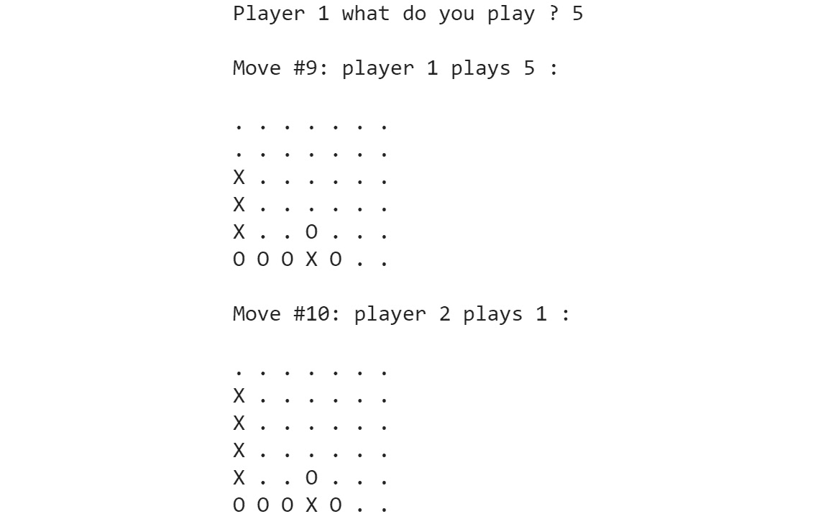
图1.30:连接四个游戏的预期输出
通过完成这项活动，你已经看到对手并不完美，但它打得相当好。如果你有很强的计算机，可以增加Negamax算法的参数。我们鼓励你想出一个更好的启发式方法。
注意
要访问该特定部分的源代码，请参考https://packt.live/3esk2hI。
你也可以在https://packt.live/3dnkfS5在线运行这个例子。
您必须执行整个笔记本才能获得想要的结果。
2。回归导论
活动2.01:使用多元变量的1、2和3次多项式回归预测波士顿房价
解决方案:
- 打开一个Jupyter笔记本。
- Import the required packages and load the Boston House Prices data from
sklearninto a DataFrame:import numpy as np import pandas as pd from sklearn import preprocessing from sklearn import model_selection from sklearn import linear_model from sklearn.preprocessing import PolynomialFeatures file_url = 'https://raw.githubusercontent.com/'\ 'PacktWorkshops/'\ 'The-Applied-Artificial-Intelligence-Workshop/'\ 'master/Datasets/boston_house_price.csv' df = pd.read_csv(file_url)df的输出如下: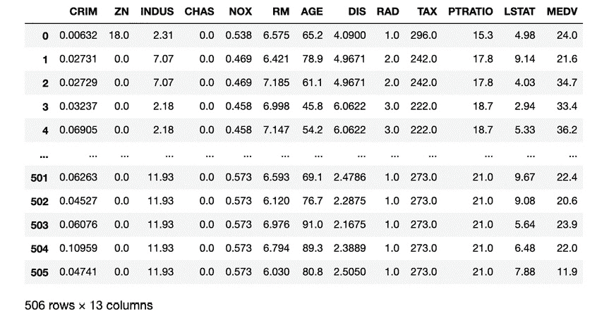在本章的早些时候，您已经了解到执行线性回归所需的大多数包来自
sklearn。我们需要导入preprocessing模块来缩放数据，导入linear_model模块来训练线性回归，导入PolynomialFeatures模块来转换多项式回归的输入，导入model_selection模块来评估每个模型的性能。 - Prepare the dataset for prediction by converting the label and features into NumPy arrays and scaling the features:
features = np.array(df.drop('MEDV', 1)) label = np.array(df['MEDV']) scaled_features = preprocessing.scale(features)features的输出如下: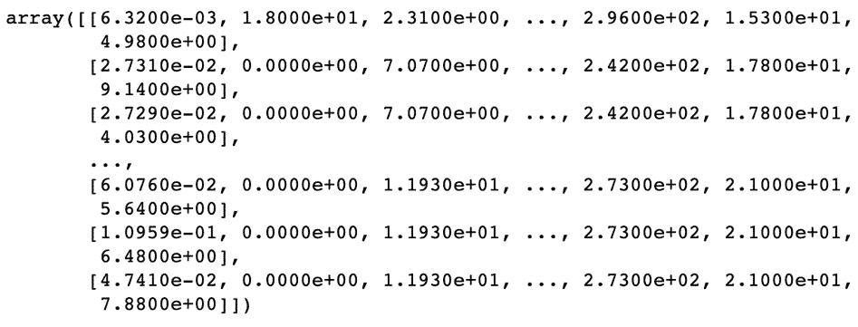array([[-0.41978194, 0.28482986, -1.2879095 , ..., -0.66660821, -1.45900038, -1.0755623 ], [-0.41733926, -0.48772236, -0.59338101, ..., -0.98732948, -0.30309415, -0.49243937], [-0.41734159, -0.48772236, -0.59338101, ..., -0.98732948, -0.30309415, -1.2087274 ], ..., [-0.41344658, -0.48772236, 0.11573841, ..., -0.80321172, 1.17646583, -0.98304761], [-0.40776407, -0.48772236, 0.11573841, ..., -0.80321172, 1.17646583, -0.86530163], [-0.41500016, -0.48772236, 0.11573841, ..., -0.80321172, 1.17646583, -0.66905833]])如你所见，我们的特征已经被适当地缩放。
由于我们没有任何缺失值，并且我们不像在练习2.03 、准备用于预测的Quandl数据中那样尝试预测未来值，我们可以直接将标签(
'MEDV')和特征转换为NumPy数组。然后，我们可以使用preprocessing.scale()函数缩放特征数组。 - Create three different set of features by transforming the scaled features into a suitable format for each of the polynomial regressions:
poly_1_scaled_features = PolynomialFeatures(degree=1)\ .fit_transform(scaled_features) poly_2_scaled_features = PolynomialFeatures(degree=2)\ .fit_transform(scaled_features) poly_3_scaled_features = PolynomialFeatures(degree=3)\ .fit_transform(scaled_features)poly_1_scaled_features的输出如下:array([[ 1. , -0.41978194, 0.28482986, ..., -0.66660821, -1.45900038, -1.0755623 ], [ 1. , -0.41733926, -0.48772236, ..., -0.98732948, -0.30309415, -0.49243937], [ 1. , -0.41734159, -0.48772236, ..., -0.98732948, -0.30309415, -1.2087274 ], ..., [ 1. , -0.41344658, -0.48772236, ..., -0.80321172, 1.17646583, -0.98304761], [ 1. , -0.40776407, -0.48772236, ..., -0.80321172, 1.17646583, -0.86530163], [ 1. , -0.41500016, -0.48772236, ..., -0.80321172, 1.17646583, -0.66905833]])我们的
scaled_features变量已经被适当地转换为次数为1的多项式回归。poly_2_scaled_features的输出如下: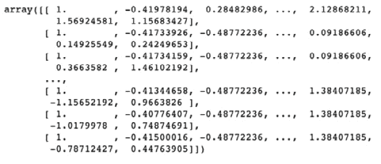array([[ 1. , -0.41978194, 0.28482986, ..., -2.28953024, -1.68782164, -1.24424733], [ 1. , -0.41733926, -0.48772236, ..., -0.04523847, -0.07349928, -0.11941484], [ 1. , -0.41734159, -0.48772236, ..., -0.11104103, -0.4428272 , -1.76597723], ..., [ 1. , -0.41344658, -0.48772236, ..., -1.36060852, 1.13691611, -0.9500001 ], [ 1. , -0.40776407, -0.48772236, ..., -1.19763962, 0.88087515, -0.64789192], [ 1. , -0.41500016, -0.48772236, ..., -0.9260248 , 0.52663205, -0.29949664]])我们的
scaled_features变量已经被适当地转换为3次数的多项式回归。我们必须以三种不同的方式变换缩放后的要素，因为每一次多项式回归都需要不同的输入变换。
- Split the data into a training set and a testing set with
random state = 8:(poly_1_features_train, poly_1_features_test, \ poly_label_train, poly_label_test) = \ model_selection.train_test_split(poly_1_scaled_features, \ label, \ test_size=0.1, \ random_state=8) (poly_2_features_train, poly_2_features_test, \ poly_label_train, poly_label_test) = \ model_selection.train_test_split(poly_2_scaled_features, \ label, \ test_size=0.1, \ random_state=8) (poly_3_features_train, poly_3_features_test, \ poly_label_train, poly_label_test) = \ model_selection.train_test_split(poly_3_scaled_features, \ label, \ test_size=0.1, \ random_state=8)由于我们有三组不同的缩放变换要素，但标注集相同，因此我们必须执行三次不同的分割。通过在每次分割中使用相同的标签集和
random_state，我们确保每次分割都获得相同的poly_label_train和poly_label_test。 - Perform a polynomial regression of degree 1 and evaluate whether the model is overfitting:
model_1 = linear_model.LinearRegression() model_1.fit(poly_1_features_train, poly_label_train) model_1_score_train = model_1.score(poly_1_features_train, \ poly_label_train) model_1_score_test = model_1.score(poly_1_features_test, \ poly_label_test)model_1_score_train的输出如下:0.7406006443486721
model_1_score_test的输出如下:0.6772229017901507
为了估计模型是否过度拟合，我们需要比较应用于训练集和测试集的模型的分数。如果训练集的分数比测试集的分数高得多，我们就过度适应了。这里的情况是，与测试集的得分
0.68相比，1次多项式回归获得了训练集的得分0.74。 - Perform a polynomial regression of degree 2 and evaluate whether the model is overfitting:
model_2 = linear_model.LinearRegression() model_2.fit(poly_2_features_train, poly_label_train) model_2_score_train = model_2.score(poly_2_features_train, \ poly_label_train) model_2_score_test = model_2.score(poly_2_features_test, \ poly_label_test)model_2_score_train的输出如下:0.9251199698832675
model_2_score_test的输出如下:0.8253870684280571
与1次多项式回归一样，我们的2次多项式回归甚至比1次多项式回归拟合得更好，但最终还是取得了更好的结果。
- Perform a polynomial regression of degree 3 and evaluate whether the model is overfitting:
model_3 = linear_model.LinearRegression() model_3.fit(poly_3_features_train, poly_label_train) model_3_score_train = model_3.score(poly_3_features_train, \ poly_label_train) model_3_score_test = model_3.score(poly_3_features_test, \ poly_label_test)model_3_score_train的输出如下:0.9910498071894897
model_3_score_test的输出如下:-8430.781888645262
这些结果非常有趣，因为3次多项式回归设法用
0.99(1是最大值)获得了接近完美的分数。这是一个警告信号，表明我们的模型过度拟合了。当模型应用于测试集并获得非常低的负得分-8430时，我们确认了这一警告。提醒一下，使用数据的平均值作为预测值可以得到0分。这意味着我们的第三个模型比仅仅使用平均值做出了更糟糕的预测。 - Compare the predictions of the 3 models against the label on the testing set:
model_1_prediction = model_1.predict(poly_1_features_test) model_2_prediction = model_2.predict(poly_2_features_test) model_3_prediction = model_3.predict(poly_3_features_test) df_prediction = pd.DataFrame(poly_label_test) df_prediction.rename(columns = {0:'label'}, inplace = True) df_prediction['model_1_prediction'] = \ pd.DataFrame(model_1_prediction) df_prediction['model_2_prediction'] = \ pd.DataFrame(model_2_prediction) df_prediction['model_3_prediction'] = \ pd.DataFrame(model_3_prediction)df_prediction的输出如下: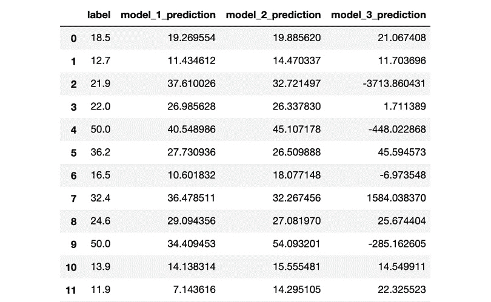
图2.32:显示预期预测值的输出
在将predict函数应用于每个模型各自的测试集之后，为了获得预测值，我们将它们转换成带有标签值的单个df_prediction数据帧。增加多项式回归的次数并不一定意味着模型的性能会比次数较少的模型好。事实上，增加程度会导致对训练数据的过度拟合。
注意
要访问该特定部分的源代码，请参考https://packt.live/3eD8gAY。
你也可以在https://packt.live/3etadjp在线运行这个例子。
您必须执行整个笔记本才能获得想要的结果。
在本活动中，我们学习了如何对波士顿房价数据集执行多变量1到3次多项式回归，并了解了增加次数如何导致模型过度拟合。
3。分类介绍
活动3.01:提高信用评分的准确性
解决方案:
- 打开一个新的Jupyter笔记本文件，执行上一个练习中的所有步骤，练习3.04 ，sci kit-Learn中的K-最近邻分类。
- 从
sklearn:from sklearn import neighbors
进口neighbors - 创建一个名为
fit_knn的函数，它采用以下参数:k、p、features_train、label_train、features_test和label_test。这个函数将使KNeighborsClassifier适合训练集，并打印训练集和测试集的准确度分数，如下面的代码片段所示:def fit_knn(k, p, features_train, label_train, \ features_test, label_test): classifier = neighbors.KNeighborsClassifier(n_neighbors=k, p=p) classifier.fit(features_train, label_train) return classifier.score(features_train, label_train), \ classifier.score(features_test, label_test)
- Call the
fit_knn()function withk=5andp=2, save the results in2variables, and print them. These variables areacc_train_1andacc_test_1:acc_train_1, acc_test_1 = fit_knn(5, 2, features_train, \ label_train, \ features_test, label_test) acc_train_1, acc_test_1预期输出如下:
(0.78625, 0.75)
凭借
k=5和p=2，KNN取得了接近0.78的好成绩。但是分数与训练集和测试集相差很大，这意味着模型过度拟合。 - Call the
fit_knn()function withk=10andp=2, save the results in2variables, and print them. These variables areacc_train_2andacc_test_2:acc_train_2, acc_test_2 = fit_knn(10, 2, features_train, \ label_train, \ features_test, label_test) acc_train_2, acc_test_2预期输出如下:
(0.775, 0.785)
将邻居的数量增加到10已经降低了训练集的准确度分数，但是现在它非常接近测试集。
- Call the
fit_knn()function withk=15andp=2, save the results in2variables, and print them. These variables areacc_train_3andacc_test_3:acc_train_3, acc_test_3 = fit_knn(15, 2, features_train, \ label_train, \ features_test, label_test) acc_train_3, acc_test_3预期输出如下:
(0.76625, 0.79)
使用
k=15和p=2，训练集和测试集之间的差异增加了。 - Call the
fit_knn()function withk=25andp=2, save the results in2variables, and print them. These variables areacc_train_4andacc_test_4:acc_train_4, acc_test_4 = fit_knn(25, 2, features_train, \ label_train, \ features_test, label_test) acc_train_4, acc_test_4预期输出如下:
(0.7375, 0.77)
增加
25的邻居数量对训练集有很大的影响。但是，模型仍然过拟合。 - Call the
fit_knn()function withk=50andp=2, save the results in2variables, and print them. These variables areacc_train_5andacc_test_5:acc_train_5, acc_test_5 = fit_knn(50, 2, features_train, \ label_train, \ features_test, label_test) acc_train_5, acc_test_5预期输出如下:
(0.70625, 0.775)
将邻居的数量增加到
50既没有提高模型的性能，也没有解决过度拟合的问题。 - Call the
fit_knn()function withk=5andp=1, save the results in2variables, and print them. These variables areacc_train_6andacc_test_6:acc_train_6, acc_test_6 = fit_knn(5, 1, features_train, \ label_train, \ features_test, label_test) acc_train_6, acc_test_6预期输出如下:
(0.8, 0.735)
更改为曼哈顿距离有助于提高训练集的准确性，但模型仍然过拟合。
- Call the
fit_knn()function withk=10andp=1, save the results in2variables, and print them. These variables areacc_train_7andacc_test_7:acc_train_7, acc_test_7 = fit_knn(10, 1, features_train, \ label_train, \ features_test, label_test) acc_train_7, acc_test_7预期输出如下:
(0.77, 0.785)
有了
k=10，训练集和测试集的准确率非常接近:在0.78左右。 - Call the
fit_knn()function withk=15andp=1, save the results in2variables, and print them. These variables areacc_train_8andacc_test_8:acc_train_8, acc_test_8 = fit_knn(15, 1, features_train, \ label_train, \ features_test, label_test) acc_train_8, acc_test_8预期输出如下:
(0.7575, 0.775)
从
k到15，该模型获得了更好的精度分数，并且没有过度拟合。 - Call the
fit_knn()function withk=25andp=1, save the results in2variables, and print them. These variables areacc_train_9andacc_test_9:acc_train_9, acc_test_9 = fit_knn(25, 1, features_train, \ label_train, \ features_test, label_test) acc_train_9, acc_test_9预期输出如下:
(0.745, 0.8)
使用
k=25，训练集和测试集的精确度之间的差异在增加，因此模型过度拟合。 - Call the
fit_knn()function withk=50andp=1, save the results in2variables, and print them. These variables areacc_train_10andacc_test_10:acc_train_10, acc_test_10 = fit_knn(50, 1, features_train, \ label_train, \ features_test, label_test) acc_train_10, acc_test_10预期输出如下:
(0.70875, 0.78)
随着
k=50的出现，模型在训练集上的表现明显下降，模型肯定是过度拟合了。
在本练习中，我们尝试了n_neighbors和p的超参数的多种组合。我们找到的最好的是给n_neighbors=10和p=2的。有了这些超参数，模型不会过度拟合，训练集和测试集的精度分数都在78%左右。
注意
要访问该特定部分的源代码，请参考https://packt.live/2V5TOtG。
你也可以在https://packt.live/2Bx0yd8在线运行这个例子。
您必须执行整个笔记本才能获得想要的结果。
活动3.02:sci kit-learn中的支持向量机优化
解决方案:
- 打开一个新的Jupyter笔记本文件，执行前面提到的所有步骤，练习3.04 ，sci kit中的K-最近邻分类-学习。
- 从
sklearn导入svm:from sklearn import svm
- 创建一个名为
fit_knn的函数，它采用以下参数:features_train、label_train、features_test、label_test、kernel="linear"、C=1、degree=3和gamma='scale'。此函数将使SVC适合训练集，并打印训练集和测试集的准确度分数:def fit_svm(features_train, label_train, \ features_test, label_test, \ kernel="linear", C=1, \ degree=3, gamma='scale'): classifier = svm.SVC(kernel=kernel, C=C, \ degree=degree, gamma=gamma) classifier.fit(features_train, label_train) return classifier.score(features_train, label_train), \ classifier.score(features_test, label_test)
- Call the
fit_knn()function with the default hyperparameter values, save the results in2variables, and print them. These variables areacc_train_1andacc_test_1:acc_train_1, \ acc_test_1 = fit_svm(features_train, \ label_train, \ features_test, \ label_test) acc_train_1, acc_test_1预期输出如下:
(0.71625, 0.75)
使用默认的超参数值(线性模型)，模型的性能在训练集和测试集之间有很大的不同。
- Call the
fit_knn()function withkernel="poly",C=1,degree=4, andgamma=0.05, save the results in2variables, and print them. These variables areacc_train_2andacc_test_2:acc_train_2, \ acc_test_2 = fit_svm(features_train, label_train, \ features_test, label_test, \ kernel="poly", C=1, \ degree=4, gamma=0.05) acc_train_2, acc_test_2预期输出如下:
(0.68875, 0.745)
对于四次多项式，该模型在训练集上表现不佳。
- Call the
fit_knn()function withkernel="poly",C=2,degree=4, andgamma=0.05, save the results in2variables, and print them. These variables areacc_train_3andacc_test_3:acc_train_3, \ acc_test_3 = fit_svm(features_train, \ label_train, features_test, \ label_test, kernel="poly", \ C=2, degree=4, gamma=0.05) acc_train_3, acc_test_3预期输出如下:
(0.68875, 0.745)
增加正则化参数
C，根本不会影响模型的性能。 - Call the
fit_knn()function withkernel="poly",C=1,degree=4, andgamma=0.25, save the results in2variables, and print them. These variables areacc_train_4andacc_test_4:acc_train_4, \ acc_test_4 = fit_svm(features_train, \ label_train, features_test, \ label_test, kernel="poly", \ C=1, degree=4, gamma=0.25) acc_train_4, acc_test_4预期输出如下:
(0.84625, 0.775)
将gamma的值增加到
0.25显著提高了模型在训练集上的性能。然而，在测试集上的准确性要低得多，所以模型是过拟合的。 - Call the
fit_knn()function withkernel="poly",C=1,degree=4, andgamma=0.5, save the results in2variables, and print them. These variables areacc_train_5andacc_test_5:acc_train_5, \ acc_test_5 = fit_svm(features_train, \ label_train, features_test, \ label_test, kernel="poly", \ C=1, degree=4, gamma=0.5) acc_train_5, acc_test_5预期输出如下:
(0.9575, 0.73)
将gamma的值增加到
0.5极大地提高了模型在训练集上的性能，但这肯定是过度拟合，因为测试集上的准确度分数要低得多。 - Call the
fit_knn()function withkernel="poly",C=1,degree=4, andgamma=0.16, save the results in2variables, and print them. These variables areacc_train_6andacc_test_6:acc_train_6, \ acc_test_6 = fit_svm(features_train, label_train, \ features_test, label_test, \ kernel="poly", C=1, \ degree=4, gamma=0.16) acc_train_6, acc_test_6预期输出如下:
(0.76375, 0.785)
使用
gamma=0.16，该模型获得了比最佳KNN模型更好的准确度分数。训练集和测试集的得分都在0.77左右。 - Call the
fit_knn()function withkernel="sigmoid", save the results in2variables, and print them. These variables areacc_train_7andacc_test_7:acc_train_7, \ acc_test_7 = fit_svm(features_train, label_train, \ features_test, label_test, \ kernel="sigmoid") acc_train_7, acc_test_7预期输出如下:
(0.635, 0.66)
sigmoid内核获得了较低的准确度分数。
- Call the
fit_knn()function withkernel="rbf"andgamma=0.15, save the results in2variables, and print them. These variables areacc_train_8andacc_test_8:acc_train_8, \ acc_test_8 = fit_svm(features_train, \ label_train, features_test, \ label_test, kernel="rbf", \ gamma=0.15) acc_train_8, acc_test_8预期输出如下:
(0.7175, 0.765)
rbf内核用gamma=0.15取得了不错的成绩。不过，这个模型有点过度拟合了。 - Call the
fit_knn()function withkernel="rbf"andgamma=0.25, save the results in2variables, and print them. These variables areacc_train_9andacc_test_9:acc_train_9, \ acc_test_9 = fit_svm(features_train, \ label_train, features_test, \ label_test, kernel="rbf", \ gamma=0.25) acc_train_9, acc_test_9预期输出如下:
(0.74, 0.765)
用
gamma=0.25模型性能变好了，但还是过拟合。 - Call the
fit_knn()function withkernel="rbf"andgamma=0.35, save the results in2variables, and print them. These variables areacc_train_10andacc_test_10:acc_train_10, \ acc_test_10 = fit_svm(features_train, label_train, \ features_test, label_test, \ kernel="rbf", gamma=0.35) acc_train_10, acc_test_10预期输出如下:
(0.78125, 0.775)
使用rbf内核和gamma=0.35，我们在训练和测试集上得到了非常相似的结果，并且模型的性能高于我们在之前的活动中训练的最佳KNN。这是我们对德国信用数据集的最佳模型。
注意
要访问该特定部分的源代码，请参考https://packt.live/3fPZlMQ的。
你也可以在https://packt.live/3hVlEm3在线运行这个例子。
您必须执行整个笔记本才能获得想要的结果。
在本练习中，我们为SVM分类器的主要超参数尝试了不同的值:kernel、gamma、C和degrees。我们看到了它们如何影响模型的性能以及它们过度拟合的倾向。通过反复试验，我们终于找到了最佳的超参数组合，并取得了接近0.78的准确率。这个过程被称为超参数调优，是任何数据科学项目的重要一步。
4。决策树介绍
活动4.01:汽车数据分类
解决方案:
- 打开新的Jupyter笔记本文件。
- 将
pandas包导入为pd:import pandas as pd
- 创建一个名为
file_url的新变量，它将包含原始数据集的URL:file_url = 'https://raw.githubusercontent.com/'\ 'PacktWorkshops/'\ 'The-Applied-Artificial-Intelligence-Workshop/'\ 'master/Datasets/car.csv'
- 使用
pd.read_csv()方法加载数据。:df = pd.read_csv(file_url)
- Print the first five rows of
df:df.head()
输出如下所示:
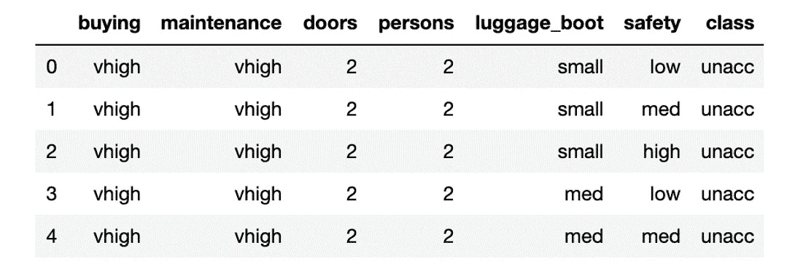图4.13:数据集的前五行
- 从
sklearn:from sklearn import preprocessing
导入preprocessing模块 - 创建一个名为
encode()的函数，它将数据帧和列名作为参数。这个函数将实例化LabelEncoder()，用列的惟一值来拟合它，并转换它的数据。它将返回转换后的列:def encode(data_frame, column): label_encoder = preprocessing.LabelEncoder() label_encoder.fit(data_frame[column].unique()) return label_encoder.transform(data_frame[column])
- 创建一个
for循环，它将遍历df的每一列，并用encode()函数对它们进行编码:for column in df.columns: df[column] = encode(df, column)
- Now, print the first five rows of
df:df.head()
输出如下所示:
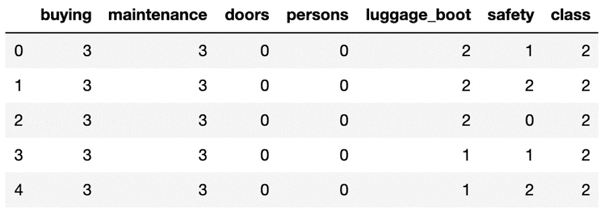图4.14:数据集更新后的前五行
- 使用
.pop()从pandas中提取class列，并将其保存在一个名为label:label = df.pop('class')的变量中 - 从
sklearn导入model_selection:from sklearn import model_selection
- 用
test_size=0.1和random_state=88:features_train, features_test, label_train, label_test = \ model_selection.train_test_split(df, label, \ test_size=0.1, \ random_state=88)
将数据集分成训练集和测试集 - 从
sklearn导入DecisionTreeClassifier:from sklearn.tree import DecisionTreeClassifier
- 实例化
DecisionTreeClassifier()并保存在一个名为decision_tree:decision_tree = DecisionTreeClassifier()
的变量中 - Fit the decision tree with the training set:
decision_tree.fit(features_train, label_train)
输出如下所示:
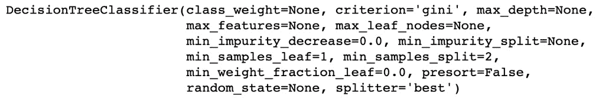图4.15:适合训练集的决策树
- Print the score of the decision tree on the testing set:
decision_tree.score( features_test, label_test )
输出如下所示:
0.953757225433526
对于我们的第一次尝试，决策树的准确率达到了
0.95。这是了不起的。 - 从
sklearn.metrics导入classification_report:from sklearn.metrics import classification_report
- Print the classification report of the test labels and predictions:
print(classification_report(label_test, \ decision_tree.predict(features_test)))输出如下所示:
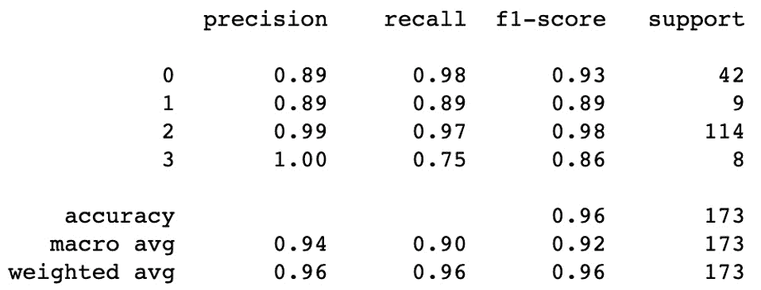
图4.16:显示预期分类报告的输出
从这个分类报告中，我们可以看到我们的模型对于所有四个类的精度分数表现得相当好。关于回忆分数，我们可以看到它在最后一节课中的表现没有那么好。
注意
要访问该特定部分的源代码，请参考https://packt.live/3hQDLtr。
你也可以在https://packt.live/2NkEEML在线运行这个例子。
您必须执行整个笔记本才能获得想要的结果。
通过完成本活动，您已经准备好汽车数据集并训练了决策树模型。您已经学习了如何获得其准确性分数和分类报告，以便您可以分析其精确度和召回分数。
活动4.02:为您的汽车租赁公司进行随机森林分类
解决方案:
- 打开一个Jupyter笔记本。
- 重复使用活动1 、汽车数据分类的步骤1 - 4 中提到的代码。
- 从
sklearn.ensemble:from sklearn.ensemble import RandomForestClassifier
导入RandomForestClassifier - 用
n_estimators=100、max_depth=6和random_state=168实例化一个随机森林分类器。将其保存到一个名为random_forest_classifier:random_forest_classifier = \ RandomForestClassifier(n_estimators=100, \ max_depth=6, random_state=168)
的变量中 - Fit the random forest classifier with the training set:
random_forest_classifier.fit(features_train, label_train)
输出如下所示:
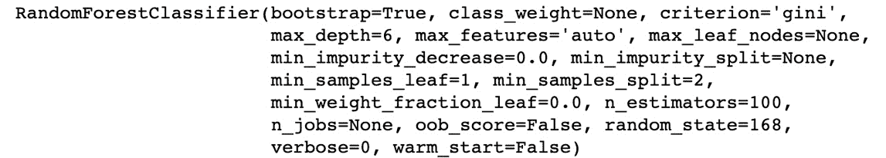图4.17:random forest分类器的日志及其超参数值
这些是
RandomForest分类器及其超参数值的日志。 - Make predictions on the testing set using the random forest classifier and save them in a variable called
rf_preds_test. Print its content:rf_preds_test = random_forest_classifier.fit(features_train, \ label_train) rf_preds_test输出如下所示:
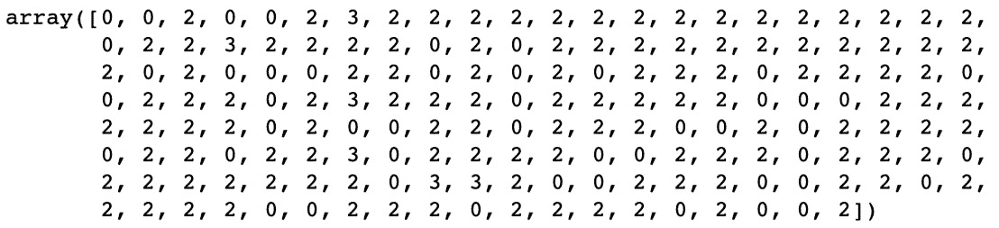图4.18:显示测试集预测的输出
- 从
sklearn.metrics导入classification_report:from sklearn.metrics import classification_report
- Print the classification report with the labels and predictions from the test set:
print(classification_report(label_test, rf_preds_test))
输出如下所示:
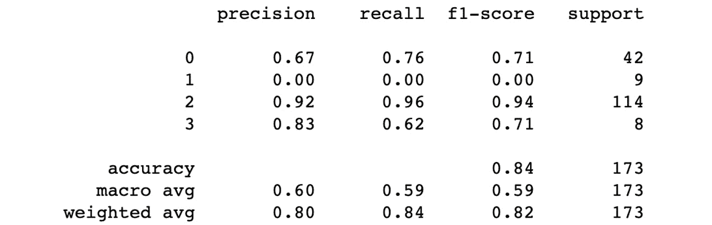图4.19:显示带有测试集标签和预测的分类报告的输出
前面报告中的F1分数向我们展示了随机森林在类别
2上表现良好，但在类别0和3上表现不佳。该模型无法准确预测类别1，但在测试集中只有9个观察值。准确性得分为0.84，而F1得分为0.82。 - 从
sklearn.metrics:from sklearn.metrics import confusion_matrix
导入confusion_matrix - Display the confusion matrix on the true and predicted labels of the testing set:
confusion_matrix(label_test, rf_preds_test)
输出如下所示:
array([[ 32, 0, 10, 0], [ 8, 0, 0, 1], [ 5, 0, 109, 0], [ 3, 0, 0, 5]])从这个混淆矩阵中，我们可以看到
RandomForest模型很难准确预测第一类。它错误地预测了该类的16个病例(8 + 5 + 3)。 - Print the feature importance score of the test set using
.feature_importance_and save the results in a variable calledrf_varimp. Print its contents:rf_varimp = random_forest_classifier.feature_importances_ rf_varimp
输出如下所示:
array([0.12676384, 0.10366314, 0.02119621, 0.35266673, 0.05915769, 0.33655239])前面的输出告诉我们，最重要的特性是第四个和第六个，分别对应于
persons和safety。 - 从
sklearn.ensemble导入ExtraTreesClassifier:from sklearn.ensemble import ExtraTreesClassifier
- 用
n_estimators=100、max_depth=6和random_state=168实例化ExtraTreestClassifier。将其保存到名为random_forest_classifier:extra_trees_classifier = \ ExtraTreesClassifier(n_estimators=100, \ max_depth=6, random_state=168)
的变量中 - Fit the
extratreesclassifier with the training set:extra_trees_classifier.fit(features_train, label_train)
输出如下所示:
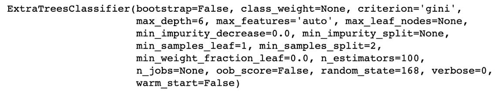图4.20:带有训练集的提取树分类器的输出
这些是
extratrees分类器及其超参数值的日志。 - Make predictions on the testing set using the
extratreesclassifier and save them in a variable calledet_preds_test. Print its content:et_preds_test = extra_trees_classifier.predict(features_test) et_preds_test
输出如下所示:
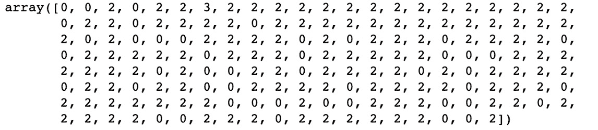图4.21:使用提取树对测试集的预测
- Print the classification report with the labels and predictions from the test set:
print(classification_report(label_test, \ extra_trees_classifier.predict(features_test)))输出如下所示:
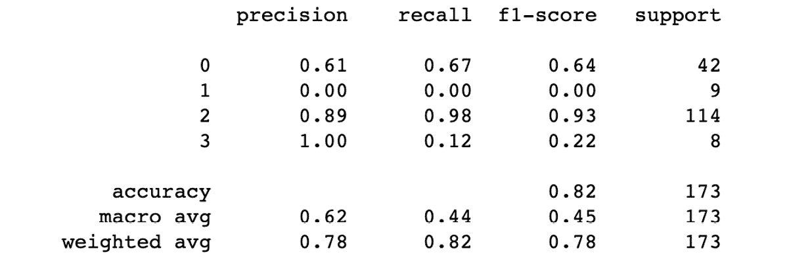图4.22:带有测试集标签和预测的分类报告
前面报告中显示的F1分数显示随机森林在类别
2上表现良好，但在类别0上表现不佳。该模型无法准确预测类别1和3，但是在测试集中分别只有9和8个观察值。准确度分数为0.82，而F1分数为0.78。因此，我们的RandomForest分类器在extratrees中表现得更好。 - Display the confusion matrix of the true and predicted labels of the testing set:
confusion_matrix(label_test, et_preds_test)
输出如下所示:
array([[ 28, 0, 14, 0], [ 9, 0, 0, 0], [ 2, 0, 112, 0], [ 7, 0, 0, 1]])从这个混淆矩阵中，我们可以看到
extratrees模型很难准确预测第一类和第三类。 - Print the feature importance score on the test set using
.feature_importance_and save the results in a variable calledet_varimp. Print its content:et_varimp = extra_trees_classifier.feature_importances_ et_varimp
输出如下所示:
array([0.08844544, 0.0702334 , 0.01440408, 0.37662014, 0.05965896, 0.39063797])
前面的输出告诉我们，最重要的特性是第六和第四个，分别对应于safety和persons。有趣的是看到RandomForest有同样的两个最重要的特征，但顺序不同。
注意
要访问该特定部分的源代码，请参考https://packt.live/2YoUY5t。
你也可以在https://packt.live/3eswBcW在线运行这个例子。
您必须执行整个笔记本才能获得想要的结果。
5。人工智能:聚类
活动5.01:使用K均值聚类销售数据
解决方案:
- 打开新的Jupyter笔记本文件。
- Load the dataset as a DataFrame and inspect the data:
import pandas as pd file_url = 'https://raw.githubusercontent.com/'\ 'PacktWorkshops/'\ 'The-Applied-Artificial-Intelligence-Workshop/'\ 'master/Datasets/'\ 'Sales_Transactions_Dataset_Weekly.csv' df = pd.read_csv(file_url) dfdf的输出如下: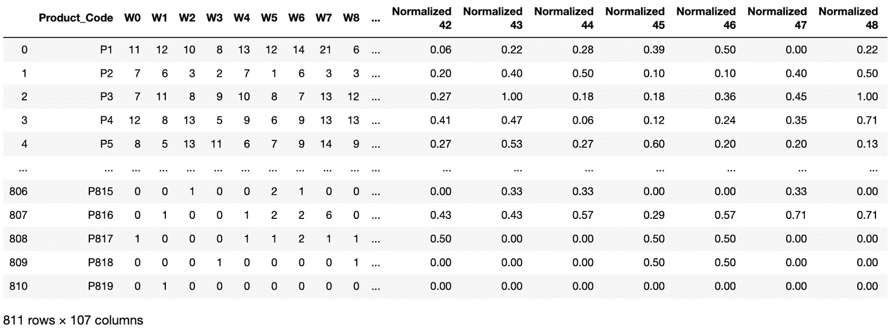图5.18:显示数据集内容的输出
如果您查看输出，您会注意到我们的数据集包含
811行，每行代表一个产品。它还包含107列，第一列是产品代码，然后是以W开始的52列，代表每周的销售数量，最后是规范化版本的52列，以Normalized开始。规范化列将是比绝对销售列更好的选择，因为它们将帮助我们的k-means算法更快地找到每个聚类的中心。因为我们要处理规范化的列，所以我们可以删除每个W列和Product_Code列。我们还可以删除MIN和MAX列，因为它们不会给我们的集群带来任何价值。还要注意的是，周数是从0到51而不是从1到52。 - Next, create a new DataFrame without the unnecessary columns, as shown in the following code snippet (the first
55columns of the dataset). You should use theinplaceparameter to help you:df2 = df.drop(df.iloc[:, 0:55], inplace = False, axis = 1)
df2的输出如下: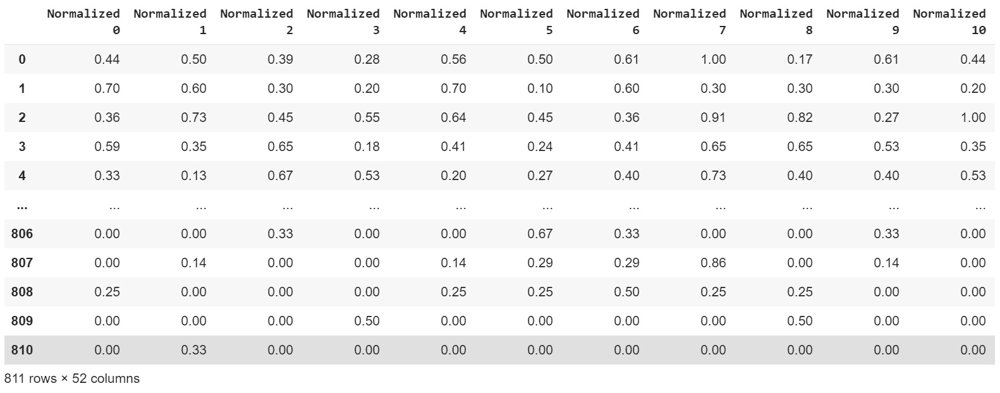drop function of the pandas DataFrame in order to remove the first
55columns. We also set theinplaceparameter toFalsein order to not remove the column of our originaldfDataFrame. As a result, we should only have the normalized columns from0to51indf2anddfshould still be unchanged. - Create a k-means clustering model with
8clusters and withrandom state = 8:from sklearn.cluster import KMeans k_means_model = KMeans(n_clusters=8, random_state=8) k_means_model.fit(df2)
为了获得
8聚类和可重复的结果，我们用除了n_clusters=8和random_state=8之外的每个参数的默认值构建了k-means模型。 - Retrieve the labels from the clustering algorithm:
labels = k_means_model.labels_ labels
labels的输出如下: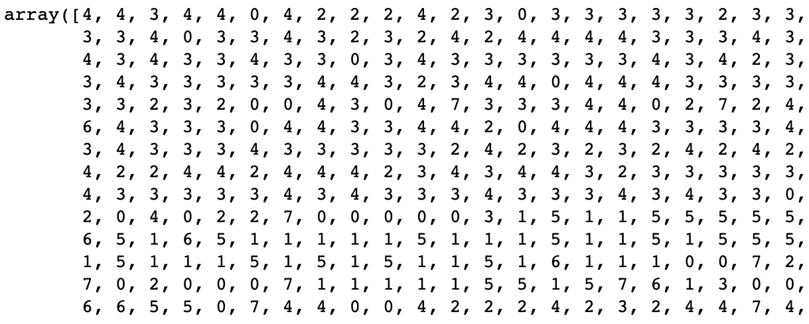图5.20:标签的输出数组
很难理解这个输出，但是
labels的每个指数代表了该产品根据类似的每周销售趋势而被分配的类别。我们现在可以使用这些分类标签将产品分组在一起。 - Now, from the first DataFrame,
df, keep only theWcolumns and add the labels as a new column, as shown in the following code snippet:df.drop(df.iloc[:, 53:], inplace = True, axis = 1) df.drop('Product_Code', inplace = True, axis = 1) df['label'] = labels df在前面的代码片段中，我们删除了所有不需要的列，并在DataFrame中添加了
labels作为新列。df的输出如下: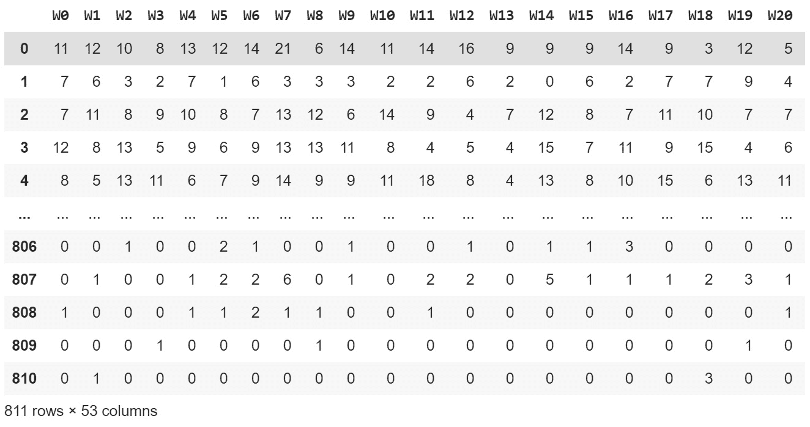图5.21:用新标签作为新列更新数据帧
现在我们有了标签，我们可以对
label列执行聚合，以便计算每个分类的年平均销售额。 - Perform the aggregation (use the
groupbyfunction from pandas) in order to obtain the yearly average sale of each cluster, as shown in the following code snippet:df_agg = df.groupby('label').sum() df_final = df[['label','W0']].groupby('label').count() df_final=df_final.rename(columns = {'W0':'count_product'}) df_final['total_sales'] = df_agg.sum(axis = 1) df_final['yearly_average_sales']= \ df_final['total_sales'] / df_final['count_product'] df_final.sort_values(by='yearly_average_sales', \ ascending=False, inplace = True) df_final在前面的代码片段中，我们首先使用DataFrame的
sum()方法和groupby函数来计算每个W列和分类中每个产品的销售额总和，并将结果存储在df_agg中。然后，我们在df的单个列(任意选择)上使用groupby函数和count()方法，以获得每个集群的产品总数(注意，我们还必须在聚合后重命名W0列)。下一步是对df_agg的所有销售列求和，以获得每个分类的总销售额。最后，我们通过用total_sales除以count_product来计算每个集群的yearly_average_sales。我们还包括了最后一步，按照最高的yearly_average_sales对集群进行排序。df_final的输出如下:
图5.22:销售交易数据集的预期输出
现在，有了这个输出，我们看到我们的k-means模型已经成功地将性能相似的产品放在一起。我们可以很容易地看到，集群3中的115产品是最畅销的产品，而集群1中的123产品表现很差。这对于任何企业来说都是非常有价值的，因为它帮助他们自动识别和分组许多性能相似的产品，而不会对产品名称或描述有任何偏见。
注意
要访问该特定部分的源代码，请参考https://packt.live/3fVpSbT。
你也可以在https://packt.live/3hW24Gk在线运行这个例子。
您必须执行整个笔记本才能获得想要的结果。
通过完成本练习，您已经学习了如何对许多产品的多个列执行k-means聚类。您还了解了即使没有标签数据，聚类对业务也是非常有用的。
活动5.02:使用均值漂移算法和凝聚层次聚类对红酒数据进行聚类
解决方案:
- 打开新的Jupyter笔记本文件。
- Load the dataset as a DataFrame with
sep = ";"and inspect the data:import pandas as pd import numpy as np from sklearn import preprocessing from sklearn.cluster import MeanShift from sklearn.cluster import AgglomerativeClustering from scipy.cluster.hierarchy import dendrogram import scipy.cluster.hierarchy as sch from sklearn import metrics file_url = 'https://raw.githubusercontent.com/'\ 'PacktWorkshops/'\ 'The-Applied-Artificial-Intelligence-Workshop/'\ 'master/Datasets/winequality-red.csv' df = pd.read_csv(file_url,sep=';') dfdf的输出如下: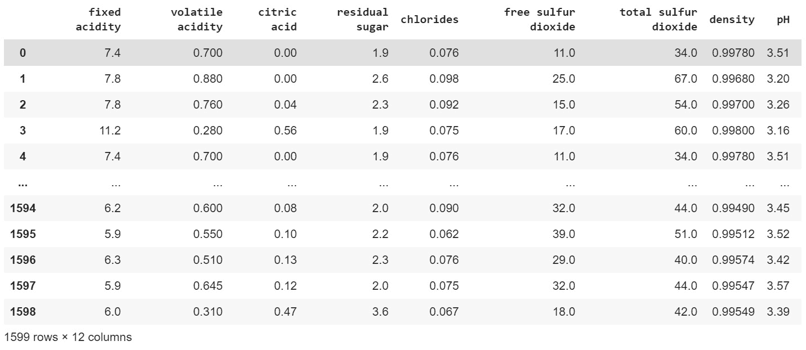图5.23:将数据集显示为输出的df
注意
前面截图的输出被截断。
我们的数据集包含
1599行，每行代表一种红酒。它还包含12列，最后一列是葡萄酒的质量。我们可以看到，剩下的11列将是我们的特征，我们需要缩放它们，以帮助我们的模型的准确性和速度。 - Create
features,label, andscaled_featuresvariables from the initial DataFrame,df:features = df.drop('quality', 1) label = df['quality'] scaled_features = preprocessing.scale(features)在前面的代码片段中，我们将标签(
quality)与特性分开。然后我们使用sklearn中的preprocessing.scale函数来缩放我们的特征，因为这将改进我们的模型。 - Next, create a mean shift clustering model, then retrieve the model's predicted labels and the number of clusters created:
mean_shift_model = MeanShift() mean_shift_model.fit(scaled_features) n_cluster_mean_shift = len(mean_shift_model.cluster_centers_) label_mean_shift = mean_shift_model.labels_ n_cluster_mean_shift
n_cluster_mean_shift的输出如下:10
我们的均值漂移模型已经创建了
10个聚类，这已经超过了我们在quality标签中的组数。这可能会影响我们的外在分数，并可能是一个早期指标，表明具有相似物理化学性质的葡萄酒不属于同一质量组。label_mean_shift的输出如下: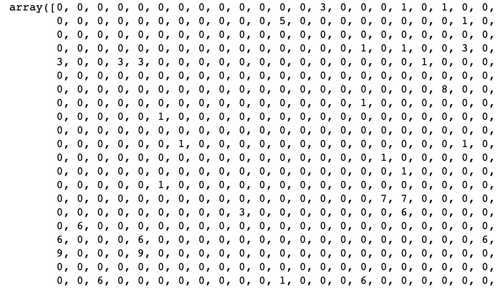图5.24:label _ mean _ shift输出数组
这是一个非常有趣的输出，因为它清楚地显示了我们数据集中的大多数葡萄酒非常相似；集群
0中的葡萄酒比其他集群中的多得多。 - Now create an agglomerative hierarchical clustering model after creating a dendrogram and selecting the optimal number of clusters for it:
dendrogram = sch.dendrogram(sch.linkage(scaled_features, \ method='ward')) agglomerative_model = \ AgglomerativeClustering(n_clusters=7, \ affinity='euclidean', \ linkage='ward') agglomerative_model.fit(scaled_features) label_agglomerative = agglomerative_model.labels_dendrogram的输出如下: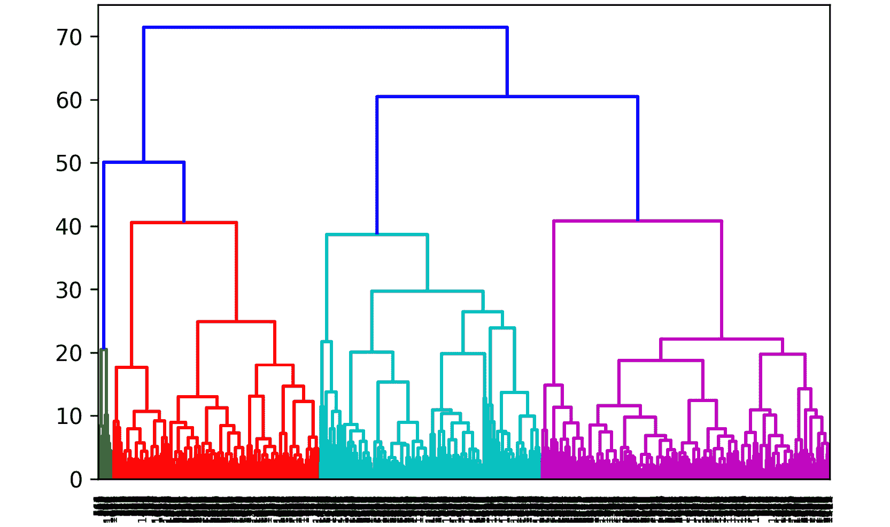图5.25:显示聚类树的输出
从这个输出中，我们可以看到7个集群似乎是我们模型的最佳数量。我们通过搜索最低分支和最高分支在 y 轴上的最大差值来获得这个数字。在我们的例子中，对于七个集群，最低分支的值为
29，最高分支的值为41。label_agglomerative的输出如下: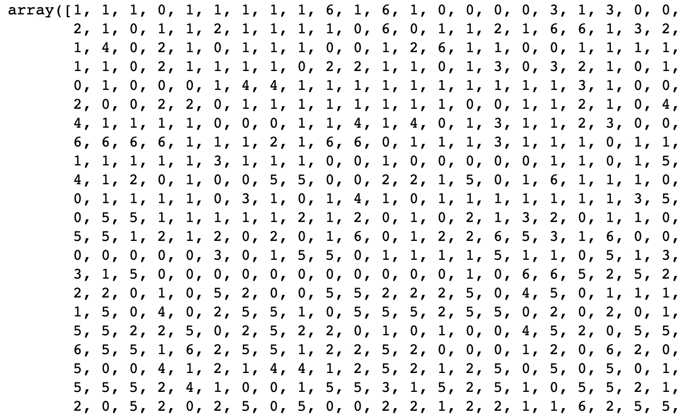图5.26:显示label _ aggregated的数组
我们可以看到，我们有一个主要的集群，
1，但不像均值漂移模型中的情况那么多。 - Now, compute the following extrinsic approach scores for both models:
a.从调整后的Rand指数开始:
ARI_mean=metrics.adjusted_rand_score(label, label_mean_shift) ARI_agg=metrics.adjusted_rand_score(label, label_agglomerative) ARI_mean
ARI_mean的输出如下:0.0006771608724007207
接下来，输入
ARI_agg获得预期值:ARI_agg
ARI_agg的输出如下:0.05358047852603172
我们的凝聚模型的
adjusted_rand_score比均值漂移模型高得多，但两个分数都非常接近0，这意味着两个模型在真实标签方面都表现不佳。b.接下来，计算调整后的互信息:
AMI_mean = metrics.adjusted_mutual_info_score(label, \ label_mean_shift) AMI_agg = metrics.adjusted_mutual_info_score(label, \ label_agglomerative) AMI_meanAMI_mean的输出如下:0.004837187596124968
接下来，输入
AMI_agg获得期望值:AMI_agg
AMI_agg的输出如下:0.05993098663692826
我们的凝聚模型的
adjusted_mutual_info_score比均值漂移模型高得多，但两者的得分都非常接近V_mean，如下所示:0.021907254751144124
接下来，输入
V_agg获得预期值:V_agg
V_agg的输出如下:0.07549735446050691
我们的凝聚模型比均值漂移模型具有更高的V-Measure，但是两个分数都非常接近
FM_mean如下所示:0.5721233634622408
接下来，输入
FM_agg获得期望值:FM_agg
FM_agg的输出如下:0.3300681478007641
这一次，我们的均值漂移模型比凝聚模型具有更高的Fowlkes-Mallows分数，但两个分数仍在分数的较低范围内，这意味着两个模型在真实标签方面的表现都不是很好。
总之，使用外部方法评估，我们的两个模型都不能找到包含基于其物理化学性质的相似质量的葡萄酒的聚类。我们将通过使用固有方法评估来确认这一点，以确保我们的模型聚类定义明确，并正确地将相似的葡萄酒分组在一起。
- Now, compute the following intrinsic approach scores for both models:
a.从轮廓系数开始:
Sil_mean = metrics.silhouette_score(scaled_features, \ label_mean_shift) Sil_agg = metrics.silhouette_score(scaled_features, \ label_agglomerative) Sil_meanSil_mean的输出如下:0.32769323700400077
接下来，输入
Sil_agg获得期望值:Sil_agg
Sil_agg的输出如下:0.1591882574407987
我们的均值漂移模型比凝聚模型具有更高的轮廓系数，但是两个分数都非常接近
CH_mean如下所示:44.62091774102674
接下来，输入
CH_agg获得预期值:CH_agg
CH_agg的输出如下:223.5171774491095
我们的凝聚模型比均值漂移模型具有更高的Calinski-Harabasz指数，这意味着凝聚模型比均值漂移模型具有更密集和定义更明确的聚类。
c.最后，找出戴维斯-波尔丁指数:
DB_mean = metrics.davies_bouldin_score(scaled_features, \ label_mean_shift) DB_agg = metrics.davies_bouldin_score(scaled_features, \ label_agglomerative) DB_meanDB_mean的输出如下:0.8106334674570222
接下来，输入
DB_agg获得期望值:DB_agg
DB_agg的输出如下:1.4975443816135114
我们的凝聚模型比均值漂移模型具有更高的David-Bouldin指数，但两个分数都接近于 0 ，这意味着两个模型在它们的聚类定义方面都表现良好。
注意
要访问该特定部分的源代码，请参考https://packt.live/2YXMl0U。
你也可以在https://packt.live/2Bs7sAp在线运行这个例子。
您必须执行整个笔记本才能获得想要的结果。
总之，通过内在方法评估，我们的两个模型都得到了很好的定义，并证实了我们对红酒数据集的直觉，即相似的理化性质与相似的质量无关。我们还能够看到，在我们的大多数得分中，凝聚层次模型比均值漂移模型表现得更好。
6。神经网络和深度学习
活动6.01:寻找Digits数据集的最佳准确度分数
解决方案:
- 打开新的Jupyter笔记本文件。
- 将
tensorflow.keras.datasets.mnist导入为mnist:import tensorflow.keras.datasets.mnist as mnist
- 使用
mnist.load_data()加载mnist数据集，并将结果保存到(features_train, label_train), (features_test, label_test):(features_train, label_train), \ (features_test, label_test) = mnist.load_data()
- Print the content of
label_train:label_train
预期输出如下:
array([5, 0, 4, ..., 5, 6, 8], dtype=uint8)
label列包含与10手写数字相对应的数值:0到9。 - Print the shape of the training set:
features_train.shape
预期输出如下:
(60000, 28, 28)
训练集由形状
28的60,000个观察值通过28组成。我们需要为我们的神经网络拉平输入。 - Print the shape of the testing set:
features_test.shape
预期输出如下:
(10000, 28, 28)
测试集由形状
28的10,000观察值和28观察值组成。 - 通过将
features_train和features_test除以255:features_train = features_train / 255.0 features_test = features_test / 255.0
来标准化它们 - 导入
numpy为np，tensorflow为tf，从tensorflow.keras:import numpy as np import tensorflow as tf from tensorflow.keras import layers
导入layers - 使用
np.random_seed()和tf.random.set_seed():np.random.seed(8) tf.random.set_seed(8)
将8设置为NumPy和TensorFlow的种子 - 实例化一个
tf.keras.Sequential()类并保存到一个名为model:model = tf.keras.Sequential()
的变量中 - 用
input_shape=(28,28)实例化layers.Flatten()并保存到一个名为input_layer:input_layer = layers.Flatten(input_shape=(28,28))
的变量中 - 用
128神经元和activation='relu'实例化一个layers.Dense()类，然后保存到一个名为layer1:layer1 = layers.Dense(128, activation='relu')
的变量中 - 用
1神经元和activation='softmax'实例化第二个layers.Dense()类，然后保存到一个名为final_layer:final_layer = layers.Dense(10, activation='softmax')
的变量中 - 使用
.add()将刚刚定义的三个图层添加到模型中，并在它们之间添加一个layers.Dropout(0.25)图层(除了展平图层):model.add(input_layer) model.add(layer1) model.add(layers.Dropout(0.25)) model.add(final_layer)
- 用
0.001作为学习率实例化一个tf.keras.optimizers.Adam()类，并保存到一个名为optimizer:optimizer = tf.keras.optimizers.Adam(0.001)
的变量中 - 使用
.compile()和loss='sparse_categorical_crossentropy', optimizer=optimizer, metrics=['accuracy']:model.compile(loss='sparse_categorical_crossentropy', \ optimizer=optimizer, \ metrics=['accuracy'])
编译神经网络 - Print a summary of the model using
.summary():model.summary()
预期输出如下:
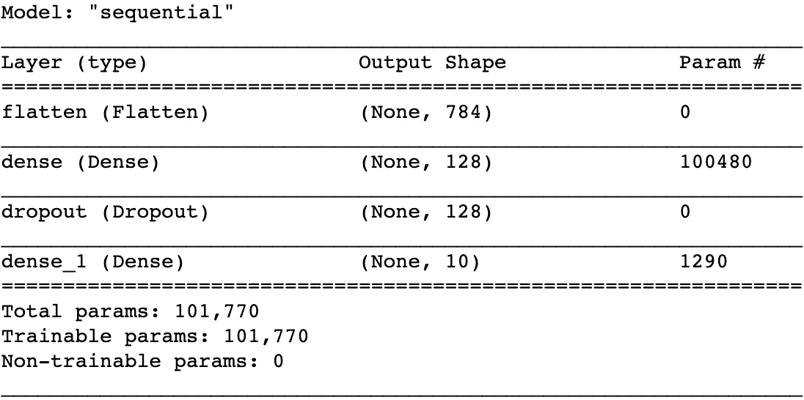图6.29:模型总结
这个输出总结了我们的神经网络的架构。我们可以看到它由四层组成，一层是平坦层，两层是致密层，还有一层是脱落层。
- 用
monitor='val_loss'和patience=5作为学习率实例化tf.keras.callbacks.EarlyStopping()类，并保存到一个名为callback:callback = tf.keras.callbacks.EarlyStopping(monitor='val_loss', \ patience=5)
的变量中 - Fit the neural networks with the training set and specify
epochs=10,validation_split=0.2,callbacks=[callback], andverbose=2:model.fit(features_train, label_train, epochs=10, \ validation_split = 0.2, \ callbacks=[callback], verbose=2)预期输出如下:
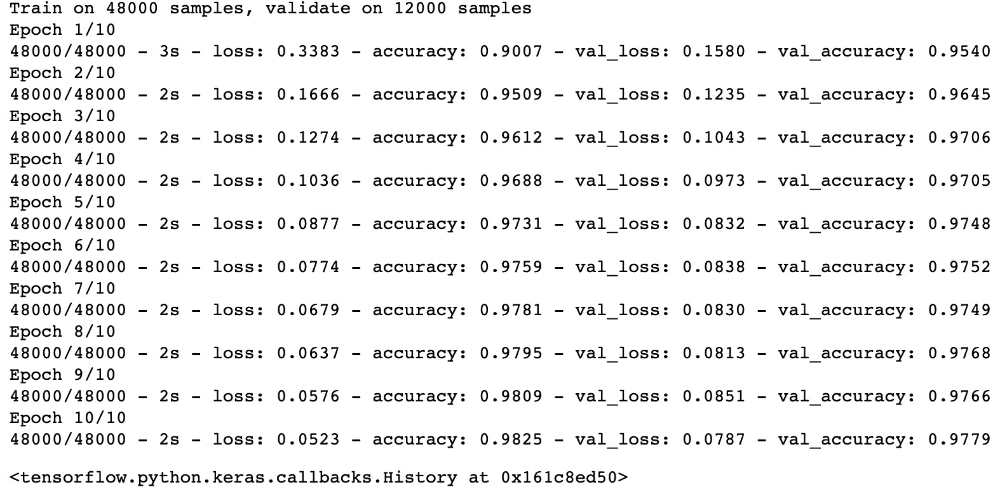
图6.30:用训练集拟合神经网络
在仅仅经过10个时期之后，我们在训练集和验证集上分别获得了0.9825和0.9779的准确率。这些都是惊人的结果。在本节中，您学习了如何使用TensorFlow对数字进行分类，从而从头开始构建和训练神经网络。
注意
要访问该特定部分的源代码，请参考https://packt.live/37UWf7E。
你也可以在https://packt.live/317R2b3在线运行这个例子。
您必须执行整个笔记本才能获得想要的结果。
活动6.02:使用CNN评估时尚图像识别模型
解决方案:
- 打开新的Jupyter笔记本。
- 将
tensorflow.keras.datasets.fashion_mnist导入为fashion_mnist:import tensorflow.keras.datasets.fashion_mnist as fashion_mnist
- 使用
fashion_mnist.load_data()加载时尚MNIST数据集，并将结果保存到(features_train, label_train), (features_test, label_test):(features_train, label_train), \ (features_test, label_test) = fashion_mnist.load_data()
- Print the shape of the training set:
features_train.shape
预期输出如下:
(60000, 28, 28)
训练集由大小为
28*28的60,000幅图像组成。 - Print the shape of the testing set:
features_test.shape
预期输出如下:
(10000, 28, 28)
测试集由尺寸为
28*28的10,000幅图像组成。 - 用维度(
number_rows、28、28、1)重塑训练集和测试集，如下面的代码片段所示:features_train = features_train.reshape(60000, 28, 28, 1) features_test = features_test.reshape(10000, 28, 28, 1)
- 通过将
features_train和features_test除以255:features_train = features_train / 255.0 features_test = features_test / 255.0
来标准化它们 - 导入
numpy为np，tensorflow为tf，从tensorflow.keras:import numpy as np import tensorflow as tf from tensorflow.keras import layers
导入layers - 使用
np.random_seed()和tf.random.set_seed():np.random.seed(8) tf.random.set_seed(8)
将8设置为numpy和tensorflow的种子 - 实例化一个
tf.keras.Sequential()类并保存到一个名为model:model = tf.keras.Sequential()
的变量中 - 用形状为
(3,3), activation='relu' and input_shape=(28,28)的64内核实例化layers.Conv2D()，并将其保存到名为conv_layer1:conv_layer1 = layers.Conv2D(64, (3,3), \ activation='relu', input_shape=(28, 28, 1))
的变量中 - 用形状为
(3,3), activation='relu'的64内核实例化layers.Conv2D()，并保存到一个名为conv_layer2:conv_layer2 = layers.Conv2D(64, (3,3), activation='relu')
的变量中 - 用
128神经元和activation='relu'实例化layers.Flatten()，然后保存到一个名为fc_layer1:fc_layer1 = layers.Dense(128, activation='relu')
的变量中 - 用
10神经元和activation='softmax'实例化layers.Flatten()，然后保存到一个名为fc_layer2:fc_layer2 = layers.Dense(10, activation='softmax')
的变量中 - 使用
.add()将你刚刚定义的四个层添加到模型中，并在每个卷积层之间添加一个大小为(2,2)的MaxPooling2D()层:model.add(conv_layer1) model.add(layers.MaxPooling2D(2, 2)) model.add(conv_layer2) model.add(layers.MaxPooling2D(2, 2)) model.add(layers.Flatten()) model.add(fc_layer1) model.add(fc_layer2)
- 用
0.001作为学习率实例化一个tf.keras.optimizers.Adam()类，并保存到一个名为optimizer:optimizer = tf.keras.optimizers.Adam(0.001)
的变量中 - 使用
.compile()和loss='sparse_categorical_crossentropy', optimizer=optimizer, metrics=['accuracy']:model.compile(loss='sparse_categorical_crossentropy', \ optimizer=optimizer, metrics=['accuracy'])
编译神经网络 - Print a summary of the model using
.summary():model.summary()
预期输出如下:
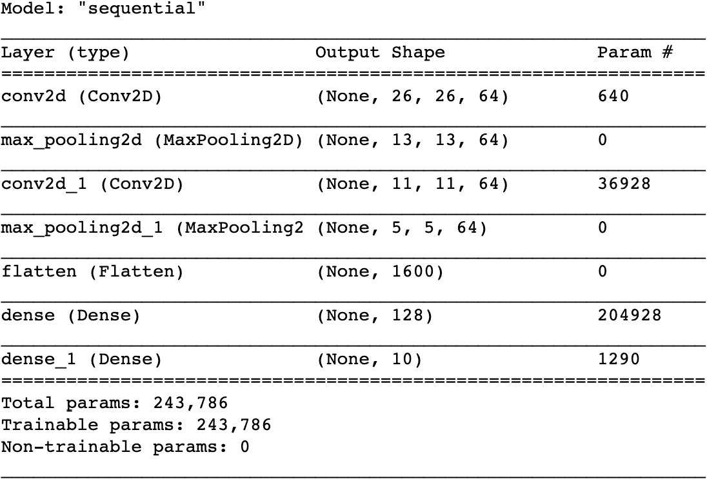图6.31:模型概要
总结向我们表明，该模型需要优化的参数不止
240,000个。 - Fit the neural network with the training set and specify
epochs=5,validation_split=0.2, andverbose=2:model.fit(features_train, label_train, \ epochs=5, validation_split = 0.2, verbose=2)预期输出如下:
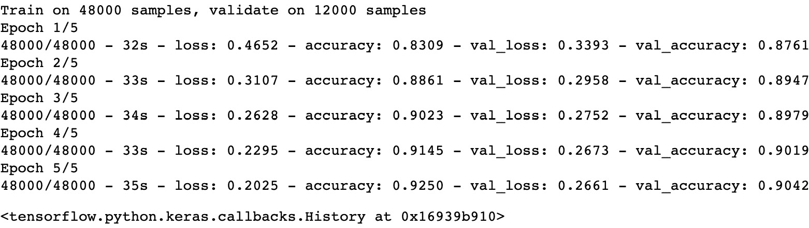图6.32:用训练集拟合神经网络
经过
5个时期的训练后，我们在训练集和验证集上分别获得了0.925和0.9042的准确度分数。我们的模型有点过了。 - Evaluate the performance of the model on the testing set:
model.evaluate(features_test, label_test)
预期输出如下:
10000/10000 [==============================] - 1s 108us/sample - loss: 0.2746 - accuracy: 0.8976 [0.27461639745235444, 0.8976]
在从时尚MNIST数据集预测服装图像的测试集上，我们获得了0.8976的准确率。可以自己尝试提高这个分数，减少过拟合。
注意
要访问该特定部分的源代码，请参考https://packt.live/2Nzt6pn。
你也可以在https://packt.live/2NlM5nd在线运行这个例子。
您必须执行整个笔记本才能获得想要的结果。
在这项活动中，我们设计并训练了一个CNN架构，用于从时尚MNIST数据集中识别服装图像。
活动6.03:用RNN评估雅虎股票模型
解决方案:
- 打开一个Jupyter笔记本。
- 进口
pandas为pd，numpy为np:import pandas as pd import numpy as np
- 创建一个名为
file_url的变量，包含一个到原始数据集的链接:file_url = 'https://raw.githubusercontent.com/'\ 'PacktWorkshops/'\ 'The-Applied-Artificial-Intelligence-Workshop/'\ 'master/Datasets/yahoo_spx.csv'
- 使用
pd.read_csv()将数据集加载到名为df:df = pd.read_csv(file_url)
的新变量中 - 使用
.iloc和.values提取第二列的值，并将结果保存在名为stock_data:stock_data = df.iloc[:, 1:2].values
的变量中 - 从
sklearn.preprocessing导入MinMaxScaler:from sklearn.preprocessing import MinMaxScaler
- 实例化
MinMaxScaler()并保存到一个名为sc:sc = MinMaxScaler()
的变量中 - 用
.fit_transform()将数据标准化，并将结果保存在一个名为stock_data_scaled:stock_data_scaled = sc.fit_transform(stock_data)
的变量中 - 创建两个名为
X_data和y_data:X_data = [] y_data = []
的空数组 - 创建一个名为
window的变量，它将包含值30:window = 30
- Create a
forloop starting from thewindowvalue and iterate through the length of the dataset. For each iteration, append toX_datathe previous rows ofstock_data_scaledusingwindowand append the current value ofstock_data_scaled:for i in range(window, len(df)): X_data.append(stock_data_scaled[i - window:i, 0]) y_data.append(stock_data_scaled[i, 0])y_data将包含每天的开盘股价，而X_data将包含最近30天的股价。 - 将
X_data和y_data转换成NumPy数组:X_data = np.array(X_data) y_data = np.array(y_data)
- 将
X_data整形为(行数，列数，1):X_data = np.reshape(X_data, (X_data.shape[0], \ X_data.shape[1], 1))
- 将前
1,000行作为训练数据，保存到两个变量features_train和label_train:features_train = X_data[:1000] label_train = y_data[:1000]
- 将第
1,000行之后的行作为测试数据，保存到两个变量features_test和label_test:features_test = X_data[:1000] label_test = y_data[:1000]
- 将
numpy导入为np，tensorflow导入为tf，从tensorflow.keras:import numpy as np import tensorflow as tf from tensorflow.keras import layers
导入layers - 使用
np.random_seed()和tf.random.set_seed():np.random.seed(8) tf.random.set_seed(8)
将8设置为NumPy和TensorFlow的seed - 实例化一个
tf.keras.Sequential()类并保存到一个名为model:model = tf.keras.Sequential()
的变量中 - 用
50单位、return_sequences='True'和input_shape=(X_train.shape[1], 1)实例化layers.LSTM()，然后保存到一个名为lstm_layer1:lstm_layer1 = layers.LSTM(units=50,return_sequences=True,\ input_shape=(features_train.shape[1], 1))
的变量中 - 用
50单位和return_sequences='True'实例化layers.LSTM()，然后保存到名为lstm_layer2:lstm_layer2 = layers.LSTM(units=50,return_sequences=True)
的变量中 - 用
50单位和return_sequences='True'实例化layers.LSTM()，然后保存到名为lstm_layer3:lstm_layer3 = layers.LSTM(units=50,return_sequences=True)
的变量中 - 用
50单位实例化layers.LSTM()，并保存到一个名为lstm_layer4:lstm_layer4 = layers.LSTM(units=50)
的变量中 - 用
1神经元实例化layers.Dense()并保存到一个名为fc_layer:fc_layer = layers.Dense(1)
的变量中 - 使用
.add()将你刚刚定义的五个图层添加到模型中，并在每个LSTM图层之间添加一个Dropout(0.2)图层:model.add(lstm_layer1) model.add(layers.Dropout(0.2)) model.add(lstm_layer2) model.add(layers.Dropout(0.2)) model.add(lstm_layer3) model.add(layers.Dropout(0.2)) model.add(lstm_layer4) model.add(layers.Dropout(0.2)) model.add(fc_layer)
- 用
0.001作为学习率实例化一个tf.keras.optimizers.Adam()类，并保存到一个名为optimizer:optimizer = tf.keras.optimizers.Adam(0.001)
的变量中 - 使用
.compile()和loss='mean_squared_error', optimizer=optimizer, metrics=[mse]:model.compile(loss='mean_squared_error', \ optimizer=optimizer, metrics=['mse'])
编译神经网络 - Print a summary of the model using
.summary():model.summary()
预期输出如下:

图6.33:模型摘要
总结向我们表明，该模型需要优化的参数不止
71,051个。 - Fit the neural network with the training set and specify
epochs=10, validation_split=0.2, verbose=2:model.fit(features_train, label_train, epochs=10, \ validation_split = 0.2, verbose=2)预期输出如下:
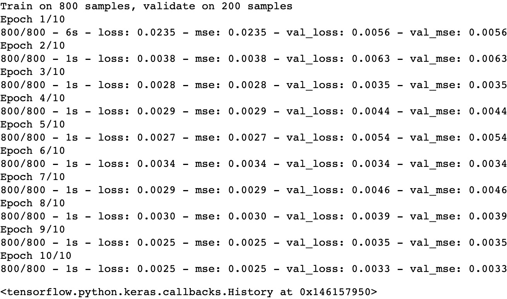图6.34:用训练集拟合神经网络
在对
10时期进行训练后，我们对训练集和验证集分别取得了0.0025和0.0033的均方误差分数。我们的模型有点过度拟合了。 - Finally, evaluate the performance of the model on the testing set:
model.evaluate(features_test, label_test)
预期输出如下:
1000/1000 [==============================] - 0s 279us/sample - loss: 0.0016 - mse: 0.0016 [0.00158528157370165, 0.0015852816]
我们在测试集上获得了0.0017的均方误差分数，这意味着我们可以使用过去30天的股票价格数据作为特征来非常准确地预测雅虎的股票价格。
注意
要访问该特定部分的源代码，请参考https://packt.live/3804U8P。
你也可以在https://packt.live/3hWtU5l在线运行这个例子。
您必须执行整个笔记本才能获得想要的结果。
在这项活动中，我们设计并训练了一个RNN模型，根据之前30天的数据预测雅虎股票价格。